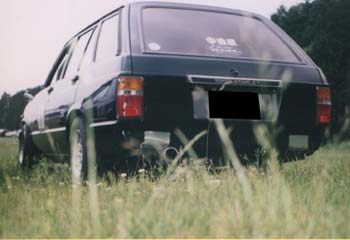
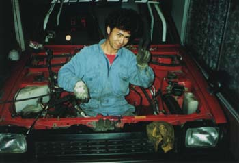
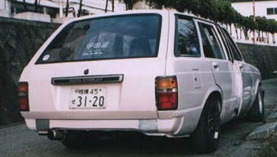
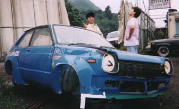
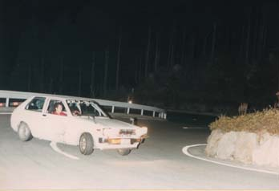
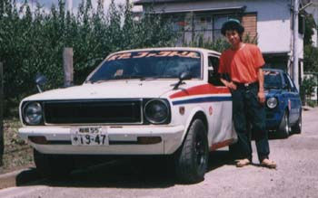
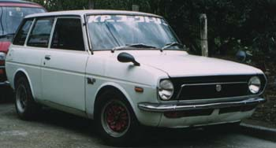

SHIN
プロフィール
何かひとこと書くスペース↓以前の紹介↓
免許を取る前にステージⅢスペシャルエンジンを購入し、そこから始まったＫ型人生。
すべてのK型搭載車に乗った事があるのでは？というほど目に付いたKPを購入してしまう癖がある。
KP-ファクトリー設立当初からの古株で影のリーダー的存在。
現在サブマシンの丸目ワークスを製作中！
| Car Specs 現在の車、TUNE DATA を記載 |
現在の車の写真を追加
ー 軌跡 ー
| Car Specs コンセプト：こわれない車作り エンジン：5K改（1486cc），レーザーヘッド1mm面研，0.5mmメタルガスケット，TRDバルブスプリング，加工70度カム，ソレックス44＋75mmカールファンネル，トラスト4-1タコ足，50.8パイマフラー，クロモリフライホイール，ルート6クロスミッション，キャロッセE/G&M/T強化マウント 足廻り：フロント車高調整＋6kg/mm，ピロアッパーマウント，リアGAB＋不明バネ，スピードスターマークⅡ12インチ 他：6点ロールケージ，フルバケット，5名乗車OK 自慢：E/Gルームのカラーリング，リアバンパーレス＆スムージング |






